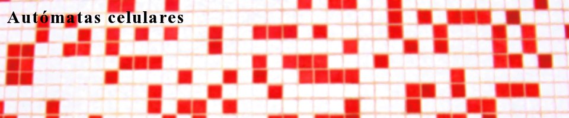
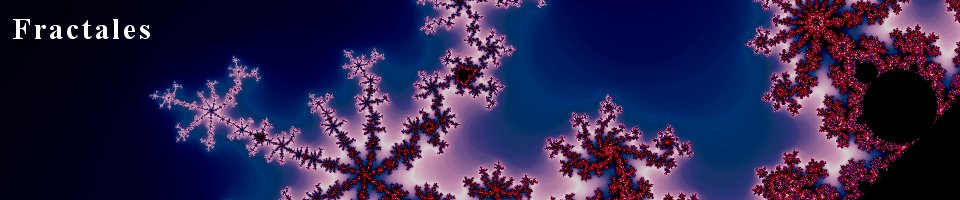

Proyectos
Documentacion y aplicacion sobre Esteganografia sobre video en formato OGG, ocultamiento de informacion y objetos en archivos de video sin que esto sea detectado.

A partir de los estudios de Von Neumann, un autómata celular es un modelo matemático para un sistema dinámico que evoluciona en pasos discretos. Es decir, es un modelo matemático para sistemas que soportan cambios; además, estos cambios se suceden cada tiempos constantes, razón por la cual, se usa una escala de enteros. Para poder definir un autómata celular, debemos comenzar por decir que matemáticamente no existe una definición formal aceptada. Este pretende ser un estudio profundo sobre la teoría de autómatas celulares y sus aplicaciones, incluyendo el desarrollo de un software libre de simulación de un autómata.
Para la realización de este proyecto hemos construído una aplicación de simulación del Juego de la Vida de Conway, un famoso autómata celular. Puedes encontrar más información sobre esta aplicación aquí.
Estudio de técnicas de seguridad y privacidad en correo electrónico, en concreto el funcionamiento de cifrado pgp y gpg, detallando los distintos algoritmos y el manejo de claves en las distintas tecnologías.

Este proyecto está dedicado al estudio de los fractales y sus aplicaciones así como al análisis de diversos programas de ordenador para el estudio de los mismos.